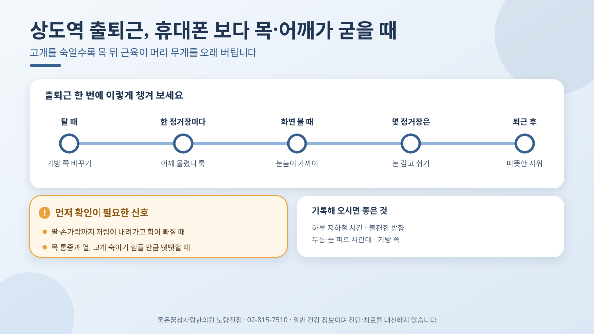

이종호 한의사 감수좋은꿈참사랑한의원 대표원장 (한의사 면허번호 19769)발행 2026-11-24 · 수정 2026-11-25
이 글의 차례
지하철에서 서서 고개를 숙이고 휴대폰을 오래 보면 목 뒤와 한쪽 어깨에 긴장이 쌓이기 쉬워, 화면을 눈높이로 올리고 한 정거장마다 어깨를 풀어 주는 습관부터 권합니다. 7호선 상도역에서 출퇴근하며 손잡이를 잡은 채 한 손으로 휴대폰을 보다가 내릴 때쯤 목이 뻣뻣해진다는 분이 많습니다.
출퇴근 시간 자체를 줄이기는 어려워도 화면을 보는 높이, 손잡이를 잡는 손, 가방을 메는 쪽처럼 지하철 안에서 바꿀 수 있는 습관은 생각보다 많습니다. 다만 팔이나 손가락까지 저림이 내려간다면 습관을 바꾸기 전에 먼저 확인을 받는 것이 순서입니다.
왜 이런 불편이 생길 수 있나요
- 고개를 숙일수록 목 뒤 근육이 머리 무게를 더 오래 버텨야 합니다. 출퇴근 시간이 길수록 작은 습관 하나가 하루의 뻐근함을 크게 바꿀 수 있습니다.
- 흔들리는 차 안에서 균형을 잡으려고 한쪽 손잡이를 잡으면 한쪽 어깨에 힘이 더 들어갑니다.
- 서서 가는 동안 다리와 허리도 흔들림에 버티느라 긴장해 목과 어깨의 힘이 잘 빠지지 않습니다.
- 가방을 늘 같은 쪽으로 메면 좌우 균형이 무너지기 쉽습니다.
- 겨울에는 추위에 어깨를 움츠린 채 걸어와 지하철에 타게 되어, 이미 굳은 상태로 출근길이 시작되기 쉽습니다.
- 출퇴근 뒤에도 책상에서 같은 자세가 이어지면 하루 종일 쉬지 못합니다.
먼저 이렇게 여쭙니다
- 출퇴근에 지하철을 하루 몇 분 정도 타시나요?
- 이동 중에 휴대폰을 어느 손으로, 어떤 높이에서 보시나요?
- 고개를 돌리거나 뒤로 젖힐 때 불편한 방향이 있나요?
- 오후에 두통이나 눈 피로가 함께 오나요?
- 가방은 주로 어느 쪽으로 메시나요?
- 베개 높이와 자는 자세는 어떤가요?
- 다시 오신 분께는 지난번 이후 휴대폰 보는 높이를 바꿔 보셨는지부터 이어서 여쭙니다.
일상에서 먼저 해 볼 수 있는 것
- 휴대폰을 눈높이 가까이 올리고, 팔이 힘들면 화면 보는 시간 줄이기
- 한 정거장마다 어깨를 한 번 으쓱 올렸다 툭 내리기
- 손잡이 잡는 손과 가방 드는 쪽을 번갈아 바꾸기
- 백팩은 양쪽 끈을 모두 메고, 무거운 짐은 발밑에 내려두기
- 몇 정거장은 화면 대신 눈을 감고 쉬거나 이어폰으로 듣는 콘텐츠로 바꾸기
- 회사에 도착하면 앉기 전에 턱을 살짝 당기고 어깨를 뒤로 크게 다섯 번 돌리기
- 퇴근 후 따뜻한 물로 샤워하며 목과 어깨 풀어 주기
상황별 예시
- 예를 들어 왕복 한 시간 넘게 서서 가며 휴대폰으로 뉴스와 메일을 확인하는 직장인의 경우, 회사에 도착하기 전부터 목이 뻣뻣하고 오후에는 뒷머리가 무거울 수 있습니다. 출근길 절반은 화면 대신 귀로 듣는 시간으로 바꾸고, 회사 모니터 높이도 함께 점검해 볼 수 있습니다.
- 예를 들어 학원이나 학교로 오가며 지하철에서 강의 영상을 보는 수험생이나 대학생의 경우, 이동 시간까지 공부 시간으로 쓰다 보니 하루 종일 고개를 숙이게 됩니다. 이동 중에는 눈높이로 들기 쉬운 짧은 암기 카드로 바꾸는 방법도 있습니다.
- 예를 들어 퇴근길에 한 손으로 손잡이를, 다른 손으로 휴대폰과 무거운 가방을 함께 드는 경우, 가방 쪽 어깨만 올라가 저녁에 한쪽 어깨가 유독 결릴 수 있어 가방 드는 쪽을 몇 정거장마다 바꿔 보시길 권합니다.
스스로 점검해 보세요
- 지하철에서 내릴 즈음 목 뒤가 뻣뻣하다
- 거울을 보면 한쪽 어깨가 더 올라가 있다
- 고개를 한쪽으로 돌릴 때만 당긴다
- 오후가 되면 뒷머리가 무겁거나 눈이 침침하다
- 가방을 늘 같은 쪽으로 멘다
- 팔이나 손가락이 저리거나 힘이 빠지는 느낌이 있다
앞의 다섯 가지는 이동 중 습관부터 바꿔 볼 신호이고, 마지막 항목에 해당하면 먼저 확인을 받아 보세요.
한의원에서 함께 살필 수 있는 경우
- 목과 어깨 뻣뻣함이 매일 반복되는 경우 자세와 척추·근육의 균형을 함께 살핍니다.
- 한쪽 어깨만 올라가고 불편한 경우 일상 습관과 함께 좌우 균형을 살핍니다.
- 두통이나 잠의 질 저하가 함께 있는 경우 생활 리듬도 이어서 여쭙니다.
좋은꿈참사랑한의원에서는 첫 방문 때 출퇴근 시간과 휴대폰·책상 자세, 불편한 방향을 먼저 듣고 맥부터 짚어 봅니다. 그 뒤 목을 돌리고 젖히고 숙이는 움직임과 좌우 어깨 높이, 등과 골반의 기울기를 살피고, 팔 저림이 있다면 감각과 힘도 확인합니다.
필요하다고 판단될 때 추나와 침·약침 등을 상태에 맞춰 정하고, 근육 상태를 더 보아야 할 때는 초음파를 함께 쓰기도 합니다. 귀가 전에는 이동 중과 책상에서 할 수 있는 동작을 알려 드리고, 다음 방문 때 같은 동작으로 다시 확인합니다.
상도역 3번 출구에서 약 200m 직진한 뒤 오거리에서 우회전해 약 200m 오시면 되고, 진료 시간은 평일 09:30~20:00(점심 13:00~14:00)입니다.
얼마나 지켜보고 언제 상담할까요
- 이동 중 습관을 바꾼 뒤 1~2주 지켜보며 내릴 때의 뻣뻣함이 어떻게 달라지는지 보세요.
- 2~3주가 지나도 같은 방향으로 고개 돌리기가 불편하거나 두통이 일주일에 여러 번 온다면 상담을 권합니다.
- 아침에 일어날 때부터 고개가 잘 돌아가지 않는 날이 잦아지면 일찍 상담해 보세요.
- 팔 힘이 갑자기 빠지거나 저림이 점점 넓어지면 바로 병원 확인을 받으세요.
이렇게 기록해 오시면 상담이 쉬워집니다
- 하루 지하철 이용 시간
- 휴대폰 화면 사용 시간(휴대폰 설정의 사용 시간 기록을 참고)
- 불편한 방향(돌리기, 젖히기, 숙이기)
- 두통·눈 피로가 오는 시간대
- 가방을 메는 쪽과 무게
이런 증상은 먼저 확인이 필요합니다
- 팔이나 손가락까지 저림이 내려가고 힘이 빠지는 경우
- 목 통증과 함께 열이 나거나 고개를 숙이기 어려울 만큼 뻣뻣한 경우
- 넘어지거나 부딪힌 뒤 목 통증이 시작된 경우
추나요법의 적용 대상과 건강보험 적용 여부, 본인부담금은 진찰 후 안내해 드립니다. 개인마다 진료 내용과 기간은 다를 수 있으며, 팔 힘이 갑자기 빠지면 바로 병원 확인을 받으세요.
관련 글
- 거북목과 일자목은 추나로 어떻게 살피나요?
- 거북목과 라운드숄더는 집에서 어떤 스트레칭을 해 볼 수 있나요?
- 출퇴근 지하철에서 오래 서 있으면 허리가 뻐근할 때는 어떻게 살피나요?

여쭙는 것
- 출퇴근에 지하철을 하루 몇 분 정도 타시나요?
- 이동 중에 휴대폰을 어느 손으로, 어떤 높이에서 보시나요?
- 고개를 돌리거나 뒤로 젖힐 때 불편한 방향이 있나요?
생활에서 해 볼 것
- 휴대폰을 눈높이 가까이 올리고, 팔이 힘들면 화면 보는 시간 줄이기
- 한 정거장마다 어깨를 한 번 으쓱 올렸다 툭 내리기
- 손잡이 잡는 손과 가방 드는 쪽을 번갈아 바꾸기
한의원에서 함께 살필 것
- 목과 어깨 뻣뻣함이 매일 반복되는 경우 자세와 척추·근육의 균형을 함께 살핍니다.
- 한쪽 어깨만 올라가고 불편한 경우 일상 습관과 함께 좌우 균형을 살핍니다.
- 두통이나 잠의 질 저하가 함께 있는 경우 생활 리듬도 이어서 여쭙니다.
먼저 확인이 필요한 신호
- 팔이나 손가락까지 저림이 내려가고 힘이 빠지는 경우
- 목 통증과 함께 열이 나거나 고개를 숙이기 어려울 만큼 뻣뻣한 경우
- 넘어지거나 부딪힌 뒤 목 통증이 시작된 경우
한눈에 보는 표
| 구분 | 핵심 |
|---|---|
| 여쭙는 것 | 출퇴근에 지하철을 하루 몇 분 정도 타시나요? 이동 중에 휴대폰을 어느 손으로, 어떤 높이에서 보시나요? |
| 생활에서 해 볼 것 | 휴대폰을 눈높이 가까이 올리고, 팔이 힘들면 화면 보는 시간 줄이기 한 정거장마다 어깨를 한 번 으쓱 올렸다 툭 내리기 |
| 한의원에서 함께 살필 것 | 목과 어깨 뻣뻣함이 매일 반복되는 경우 자세와 척추·근육의 균형을 함께 살핍니다. 한쪽 어깨만 올라가고 불편한 경우 일상 습관과 함께 좌우 균형을 살핍니다. |
| 먼저 확인이 필요한 신호 | 팔이나 손가락까지 저림이 내려가고 힘이 빠지는 경우 목 통증과 함께 열이 나거나 고개를 숙이기 어려울 만큼 뻣뻣한 경우 |
자주 묻는 질문
추나를 받으면 자세가 바로 바뀌나요?
한 번에 바뀐다고 말하기는 어렵습니다. 진료와 함께 출퇴근 습관을 바꾸는 것이 중요해 함께 계획을 세웁니다.
목 베개나 자세 보조 밴드가 도움이 되나요?
사람마다 맞는 정도가 다릅니다. 쓰고 나서 더 불편하면 멈추고 진료 때 이야기해 주세요.
추나는 아프지 않나요?
힘의 세기와 방향을 몸 상태에 맞춰 조절하며, 불편하면 바로 말씀해 주시면 멈추거나 바꿉니다.
앉아서 갈 때는 어떻게 보면 좋나요?
휴대폰을 가방 위에 올려 눈높이 가까이 들고 보거나, 몇 정거장은 화면을 내려놓고 쉬는 것을 권합니다.
목을 꺾어 소리를 내면 시원한데 괜찮나요?
일부러 세게 꺾어 소리를 내는 습관은 목에 부담이 될 수 있습니다. 어깨를 으쓱했다 내리거나 천천히 고개를 돌리는 정도로 하고, 계속 뻑뻑하면 진료 때 이야기해 주세요.
좋은꿈참사랑한의원은 재진 때 지난번 이야기부터 이어서 여쭙니다. 진료시간과 예약은 오시는 길에서 확인하세요.
어디서 상담받을 수 있나요?
좋은꿈참사랑한의원은 서울 동작구 만양로2길 2 신성빌딩 3층·5층(서울 동작구 상도동, 7호선 상도역 3번 출구 근처)에 있습니다. 한의사 3명(이종호 대표원장, 조영기 수석진료원장, 정원영 진료원장)이 진료합니다. 진료시간은 평일 09:30~20:00(점심 13:00~14:00), 토·일·공휴일 09:30~15:00이며, 방문 전 전화로 확인을 권합니다. 예약은 네이버 예약, 카카오톡 상담, 전화 02-815-7510로 받습니다.
이 글은 일반적인 건강 정보이며 개인의 진단이나 치료를 대신하지 않습니다. 증상이 있거나 복용 중인 약이 있다면 진료를 통해 확인하세요. 치료 효과는 개인마다 다를 수 있습니다.
작성 기준: 일반적으로 알려져 있는 건강 정보를 참고해 정리했습니다(대표원장 감수). 증상 기록은 1~2주 동안 하루 1회, 비슷한 시간에 적어 오시면 지난 상태와 비교하기 쉽습니다.